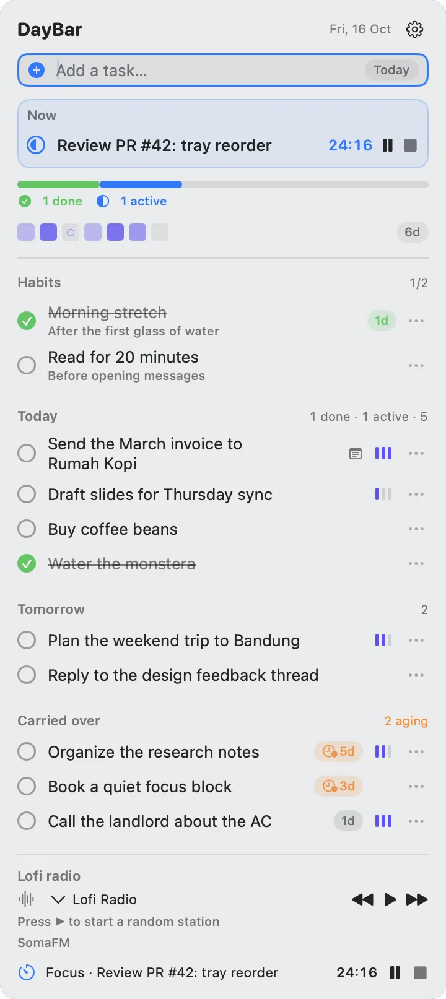
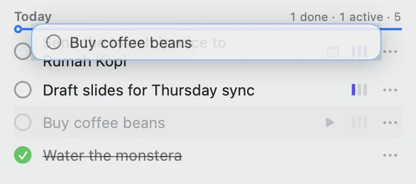
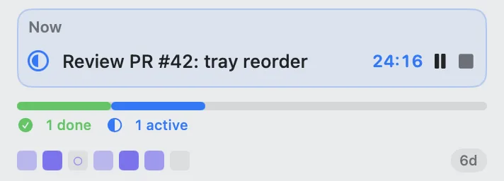
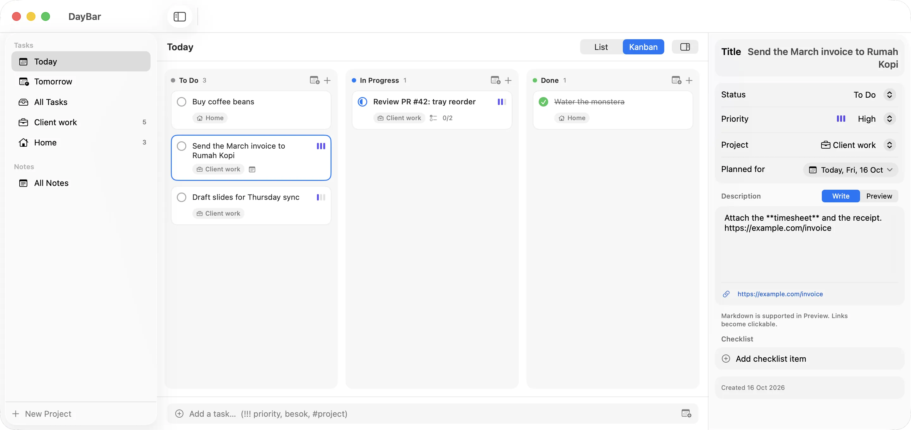
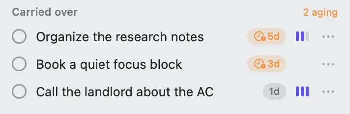
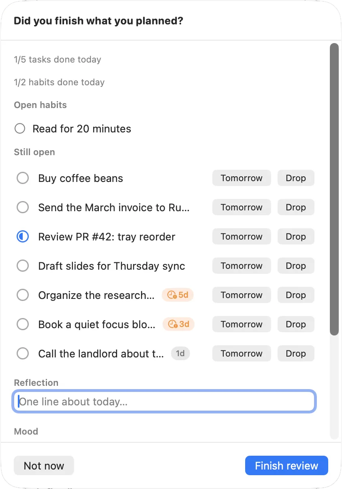

Plan your day. Finish what you planned.
A planner that lives in your Mac’s menu bar. Type a task the way you’d say it.
- High
- Tomorrow
- Client work
! !! !!! set priority, tomorrow or besok
sets the day, #client or #home picks a project.
Free and open source. Needs macOS 14 or later.

Your order, not an algorithm’s
Drag a task where you want it, or press ⌘↑ and ⌘↓. It stays there. Priority is a flag you read at a glance, and it never reshuffles the list behind your back.

- Low
- press 1 or type
! - Medium
- press 2 or type
!! - High
- press 3 or type
!!!
Start one thing
The Now card holds the task you’re working on. Press Focus to start a Pomodoro on it, and the countdown runs in the menu bar, where you can see it from any app. Finished sessions fill in the week strip underneath, next to your focus streak.

See the whole board
Open the main window for every day and project, as a list or a kanban board. Select a card to edit it in the inspector: the date, priority, project, Markdown notes and a checklist.

Nothing quietly disappears
A task you don’t finish moves to the next day and shows how long it has waited. After three days the badge turns amber. It’s a nudge, not a wall of red.

At the end of the day, the review asks one question: did you finish what you planned? Send what’s left to tomorrow or drop it, then write one line about the day.

Made for the keyboard
Press ⌥⌘D in any app to open quick-add. You can change that shortcut in Settings.
In the menu-bar panel
- ↑↓
- Select a task
- ⌘↑ ⌘↓
- Move it up or down
- Space
- Mark it done
- 0 to 3
- Set its priority
- Return
- Open its details
- Esc
- Close the panel
In the main window
- ←↑↓→
- Move between cards
- ⌘← ⌘→
- Move a card to another column
- ⌘K
- Mark it done
- ⌥⌘K
- Start or stop it
- ⌃⌘T
- Move it to today
- ⌥⌘I
- Show or hide the inspector
Install
There’s no account to create and nothing to set up. DayBar lives in the menu bar, so look for it there rather than in the Dock.
-
Download
Get
DayBar-vX.Y.Z-macOS.zipfrom Releases on GitHub. -
Move it to Applications
Unzip the archive and drag DayBar.app into your Applications folder.
-
Open it the first time
In Finder, Control-click DayBar.app, choose Open, then confirm. The app is signed ad hoc, so macOS asks once before the first launch.
Your day stays on your Mac
Tasks, habits and notes live in a database on your Mac. There’s no account, and no DayBar server to send them to.
- Apple Reminders sync stays off until you turn it on in Settings.
- Mood suggestions in the daily review are worked out on your Mac.
- DayBar uses the network for update checks and for the SomaFM radio player.